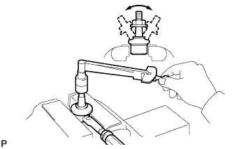

Rear Suspension Arm Assembly NO.1 LH Inspection |
| 1. Inspect Rear Suspension Arm Assembly NO.1 LH |
 |
Ball Joint Inspection
Secure the rear suspension arm assembly No.1 LH in a vise using aluminum plates.
Install the nut to the stud of the rear suspension arm assembly No.1 LH.
Move the stud back and forth 5 times, then turn it continuously at a rate of 2 to 4 seconds per turn and measure the turning torque on the 5th turn.
Turn the stud.
Dust Boot Inspection
Check that the dust boot has no cracks or grease leaks.